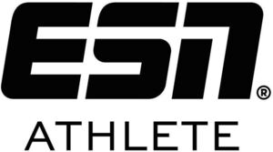

Trade Mark Journal No.2025/031 1 August 2025
WO0000001864953 (1,5,16,20,21,24,25,28,29,30,32,35,40,44)
Office of origin: European Union Intellectual Property Office (EUIPO)
Date of International Registration:5 December 2024
Date of designation in the UK:
5 December 2024

International priority date claimed: 7 June 2024
(European Union Intellectual Property Office (EUIPO))
(019038547)
- Class 1
- Aromatics [chemicals]; proteins for use in the manufacture of food supplements; vitamins for use in the manufacture of food supplements; proteins for the food industry.
- Class 5
- Alginates for pharmaceutical purposes; amino acid preparations for medical purposes; anti-oxidant food supplements; food for babies; bacteriological preparations for medical and veterinary use; dietary fiber to aid digestion; candy, medicated; chemico-pharmaceutical preparations; dextrins for pharmaceutical use; dietary supplement drink mixes; food supplements; dietetic preparations adapted for medical use; fitness and endurance supplements; herbal dietary supplements for persons special dietary requirements; dietary supplements for pets in the nature of a powdered drink mix; dietary supplements and dietetic preparations; dietetic sweeteners for medical purposes; dietary and nutritional preparations; dietetic beverages adapted for medical purposes; dietetic food preparations adapted for medical use; dietetic confectionery adapted for medical purposes; protein supplement shakes; albuminous preparations for medical purposes; elixirs [pharmaceutical preparations]; enzymes and enzyme preparations for medical purposes; ground flaxseed fiber for use as a dietary supplement; greases for medical purposes; liquid herbal supplements; food supplements in liquid form; gelatine for medical purposes; royal jelly for medical purposes; medicinal drinks; powdered fruit-flavored dietary supplement drink mix; glycerine for medical purposes; guaiacol for pharmaceutical purposes; yeast extracts for pharmaceutical purposes; medicinal herb infusions; hormones for medical purposes; calcium tablets as a food supplement; capsules for medicines; cachets for pharmaceutical purposes; pharmaceutical preparations containing caffeine; herbal beverages for medicinal use; herbal preparations for medical use; l-carnitine for weight loss; linseed for pharmaceutical purposes; linseed meal for pharmaceutical purposes; magnesia for pharmaceutical purposes; magnesium sulphate for pharmaceutical use; meal replacement powders; malt for pharmaceutical purposes; malt extracts for pharmaceutical use; almond milk for pharmaceutical purposes; medicinal drinks; medicinal drinks; medicinal herbs; medicinal infusions; medicated food supplements; medicinal tea; mineral dietary supplements for humans; mineral dietary supplements; vitamin fortified beverages for medical purposes; multi-vitamin preparations; multi-vitamin preparations; mediums (bacteriological culture -); albuminous foodstuffs for medical purposes; nutritional supplement meal replacement bars for boosting energy; dietary supplemental drinks; mineral nutritional supplements; dietary supplements for human beings; nutritional supplements not adapted for medical use with a protein base; food supplements for sportsmen; dietary supplements for animals; nutritional supplements for veterinary use; nutritional drink mix for use as a meal replacement; dietary supplements in powder form; protein powder dietary supplements; health-aid food supplements containing ginseng; nutritional supplements; food for medically restricted diets; mineral food preparations for medical purposes; by-products of the processing of cereals for medical purposes; plant extracts for pharmaceutical purposes; herbal supplements; pharmaceuticals; pharmaceutical preparations and substances; trace element preparations for human use; preparations for health care; preparations for making dietetic beverages for medicinal purposes, for medical purposes; preparations for supplementing the body with essential vitamins and microelements; protein synthesis inhibitors; protein supplements for animals; nutritional supplement food bars; hypnotic sedatives; slimming tea for medical purposes; syrups for pharmaceutical purposes; soy protein dietary supplements; soy isoflavone dietary supplements; turpentine for pharmaceutical purposes; tonics [medicines]; digestives for pharmaceutical purposes; veterinary preparations; food supplements for veterinary use; vitamin and mineral preparations; vitamin and mineral supplements; vitamin drinks; delivery agents in the form of coatings for tablets that facilitate the delivery of nutritional supplements.
- Class 16
- Printed matter; flyers; printed coupons; food wrappers; millboard; boxes of paper or cardboard; bags [envelopes, pouches] of paper or plastics, for packaging; films for wrapping foodstuffs; fiberboard boxes; plastic materials for packaging; wrapping paper; advertising pamphlets; advertising pamphlets; signboards of paper or cardboard.
- Class 20
- Non-metallic caps and closures for bottles and for containers; capsules [non-metallic containers]; boxes of wood or plastic; plastic lids for cans; plastic trays [containers] used in food packaging; plastics components for packaging containers; portable boxes [containers] of plastic; packaging containers made of wood; packaging containers of plastic; boxes made of plastics materials for packaging; boxes (packaging -) in collapsible form [plastic]; cylindrical cans, not of metal.
- Class 21
- Lunch boxes; bread bins; bread baskets for household purposes; containers for household or kitchen use; household containers of precious metal; coffee mugs; coffee pots; coffee cups; shaker bottles sold empty; cocktail shakers; personal dispensers for pills or capsules for domestic use; pill boxes [not for medical purposes]; tea caddies; tea cups; table plates; drinking bottles for sports; drinking bottles; all the aforesaid being promotional products in connection with nutritional supplements.
- Class 24
- Towels of textile.
- Class 25
- Clothing; american football bibs; sleeveless jerseys; arm warmers [clothing]; warm-up pants; trunks; bath robes; swim shorts; swimming trunks; bandanas [neckerchiefs]; baseball uniforms; sportswear; boxer shorts; brassieres; bustiers; capes; women's outerclothing; down jackets; down vests; fleece vests; leisure suits; slacks; casualwear; belts [clothing]; waist belts; unitards; clothing for gymnastics; gloves [clothing]; cycling gloves; handwarmers [clothing]; men's underwear; trousers; shorts; trousers; girdles; hats; jackets being sports clothing; sleeveless jackets; denims [clothing]; denim jeans; denim jackets; shell suits; jogging sets [clothing]; sweatpants; jogging tops; skull caps; knee highs; short sets [clothing]; sports headgear [other than helmets]; headgear; body warmers; short-sleeved T-shirts; running suits; running vests; casual trousers; leggings [trousers]; coats; combinations [clothing]; overshirts; parkas; crew neck sweaters; mock turtleneck sweaters; v-neck sweaters; slipovers; bloomers; pyjamas; pajama bottoms; cyclists' clothing; cycling shorts; skirts; scarves; footwear; sweat bands for the wrist; sweatbands; anti-perspirant socks; boy shorts [underwear]; underpants; sports bras; sports shirts with short sleeves; casual shirts; sports pants; sports jackets; sports caps and hats; gym suits; sports caps; sports shoes; sports socks; sports jerseys; sports singlets; beach clothes; beach robes; stretch pants; knit shirts; cardigans; sweat-absorbent stockings; stockings; sweat shirts; tank tops; camouflage shirts; camouflage pants; camouflage jackets; camouflage vests; strapless bras; sweat shorts; tracksuit tops; knitwear [clothing]; tee-shirts; gym shorts; ladies' underwear; sweat-absorbent underwear; undershirts; thermally insulated clothing; waterproof capes; waterproof outerclothing; water socks; waterproof trousers; rainproof jackets; reversible jackets; waistcoats; wind vests; winter gloves; winter coats; woollen socks; yoga pants; yoga shirts; all the aforesaid being promotional products in connection with nutritional supplements.
- Class 28
- Physical exercise equipment; rhythmic gymnastics ribbons; leg guards for athletic use; elbow guards [sports articles]; finger stretching resistance bands; machines for physical exercises; exercise bands; body training apparatus [exercise]; weight lifting belts [sports articles]; grip tapes for rackets; grips for rackets; grips for sporting articles; weight lifting belts [sports articles]; appliances for gymnastics; wrist guards (for sports); wrist guards for athletic use; wrist straps for weightlifting; weight lifting gloves; hand protectors adapted for sporting use; knee guards [sports articles]; knee guards [sports articles]; knee guards [sports articles]; body protectors for sports use; kettle bells; dumb-bells; bar-bells; protective padding for sports; protective padding for sports; appliances for gymnastics; pulling aids (physical exercise equipment to support grip and provide extra resistance for exercises).
- Class 29
- Seaweed extracts for food; alginates for culinary purposes; candied fruits; flavoured yoghurts; flavoured milk; flavoured milk beverages; flavoured oils; flavoured milk powder for making drinks; drinks based on yogurt; truffle-based spread products (truffle creams); legume-based spreads; smoked fish spread; spreads consisting of hazelnut paste; dairy spreads; buttermilk; vegetable-based chips; desserts made from milk products; curd; drinks based on yogurt; pickled fruits; white of eggs; powdered egg whites; peanut butter; fermented bean curd; prepared meals consisting primarily of meat, fish, poultry or vegetables or meat substitutes; low fat dairy spreads; fish, seafood and molluscs spreads; fish, not live; fish balls; fish extracts; fish-based foodstuffs; fish croquettes; meat and meat products; meat; meat substitutes; fruit chips; milk drinks containing fruits; fruit-based meal replacement bars; jellies, jams, compotes, fruit and vegetable spreads; formed textured vegetable protein for use as a meat substitute; hardened oils for food; cooked fruits; chilled dairy desserts; ground nuts; vegetable chips; vegetable extracts for food; vegetable-based snack foods; drinks based on yogurt; drinks made from dairy products; drinks made from dairy products; oat-based beverages [milk substitute]; soya-based beverages used as milk substitutes; drinks based on yogurt; dried pulses; dried fruit; seasoned nuts; hemp milk used as a milk substitute; canned pulses; legume salads; hydrogenated oils for food; fruit preserves; bottled fruits; fruit flavoured yoghurts; custard style yoghurts; yoghurt; milk-based beverages containing coffee; kephir [milk beverage]; cooking fats; coconut fat; preserved pulses; fruit, preserved; artificial cream (dairy product substitutes); pumpkin seed oil for food; corn fats; marmalade; milk; plant-based milk substitutes; milk substitutes; non-dairy milk substitutes; beverages having a milk base; milk beverages with cocoa; cocoa flavored milk beverages; milk-based beverages flavored with chocolate; milk-based beverages containing fruit juice; milk products; powdered milk for food purposes; milk shakes; vitamin, protein and mineral enriched foods consisting primarily of meat, fish, poultry, vegetables or meat substitutes; nutritional foodstuffs, not for medical purposes, consisting primarily of meat, fish, poultry, vegetables or meat substitutes; whey; dairy products and dairy substitutes; soy-based food bars; fish-based foodstuffs; sausage casings, natural or artificial; edible insects, not live; fish, seafood and molluscs, not live; powdered nut butters; nut-based meal replacement bars; nut-based snack foods; mixtures of fruit and nuts; fruit salads; vegetable fats for food; vegetable oils for food; post-workout shakes (milk products); pre-workout shakes (milk products); quark; rice bran oil for food; rice milk; rice milk; seitan [meat substitute]; snack foods based on legumes; milk-based snacks; tofu-based snacks; soybean oil; soya patties; soy chips; soya yoghurt; soya milk; soya milk; powdered soya milk; edible fats; edible oils and fats; soups and stocks, meat extracts; extracts for soups; mixes for making soup; soup pastes; soup powders; frozen fruits; animal fats for food; tofu; tofu patties; vegetable burgers; vegetarian sausages; vegetarian charcuterie; peas, processed; processed meat products; processed pulses; processed soybeans; soya [prepared]; poultry; vegetables, processed; fruit, processed; prepared beef; birds' eggs and egg products; whale oil for food; charcuterie; prepared insects and larvae; pollen prepared as foodstuff; organic nut and seed-based snack bars; chia seed oil for food; edible nuts; edible seeds; roasted nuts; salted nuts; shelled nuts; dried nuts; candied nuts; preserved nuts; spiced nuts; snack mixes consisting of dehydrated fruit and processed nuts; snack mixes consisting of processed fruits and processed nuts; nut and seed-based snack bars; snack foods based on nuts; processed chia seed for food; nuts, prepared; seeds, prepared; nuts, prepared; foods, not for medical purposes, based on protein milk and edible fats, including with added fatty acids, vitamins, minerals, calcium, magnesium, trace elements, plants and plant extracts, amino acids and/or amino acid derivatives, either singly or in combination; ready-to-use mixes to make high-protein soups as a meal.
- Class 30
- Edible ices; powders for making ice cream; sherbets [ices]; ice milk bars; frozen yoghurt [confectionery ices]; high-protein cereal bars; frozen pizzas; frozen meals consisting primarily of pasta; aromatic preparations for candies; aromatic preparations for ice-creams; aromatic preparations for cakes; food flavourings, other than essential oils; flavourings, other than essential oils, for beverages; food flavourings, other than essential oils; flavourings for foods; substances imparting flavour for addition to drink [other than essential oils]; flavorings and seasonings; snack food products consisting of cereal products; snacks manufactured from muesli; ready-made baking mixtures; baking powder; batter for making pancakes; bakery goods; sweets; bread; brownies; cereals; chili powders; grain-based chips; flour based chips; crisps made of cereals; flour based chips; biscuits; dessert mousses [confectionery]; puddings; rice-based pudding dessert; dessert souffles; ice [frozen water]; frozen yogurt; ice cream; soy-based ice cream substitute; ice milk [ice cream]; iced tea; cereal based energy bars; edible essences for foodstuffs [other than etheric substances and essential oils]; alimentary seasonings; essences for foodstuffs, except etheric essences and essential oils; vinegar; extruded food products made of maize; pastries; noodle-based prepared meals for toddlers; rice-based prepared meals; prepared meals in the form of pizzas; fruit coulis [sauces]; egg rolls; breakfast cereals containing a mixture of fruit and fibre; breakfast cereals; frozen yoghurt [confectionery ices]; boiled sweets; spice rubs; iced tea mix powders; vegetable pastes [sauces]; tea-based beverages; chips [cereal products]; cereal preparations; cereal products in bar form; cereal powders; cereal-based meal replacement bars; cereal bars; cereal-based snack food; preparations made from cereals; dry seasonings; gimbap [korean rice dish]; dried and fresh pastas, noodles and dumplings; alimentary seasonings; spices in the form of powders; spices; spice extracts; spice preparations; spiced salt; spicy sauces; gluten-free bakery products; semolina; semolina pudding; green tea; oat bars; yeast; yeast extracts for human consumption; honey; instant pudding mixes; coffee, teas and cocoa and substitutes therefor; vegetal preparations for use as coffee substitutes; cocoa, coffee and chocolate-based beverages; biscuits; cake powder; maltodextrins for nutritional use [other than medical]; malt for human consumption, malt extracts for food; seasoning mixes; mixes for preparing sauces; preparations for making bakery products; mixtures for making ice cream products; mixtures for making water ices; ready-to-use mixes to make high-protein salad dressings; ready-to-use mixes to make high-protein sauces for meals; mousse confections; cereal bars and energy bars; oat-based food; foodstuffs made from oats; natural low calorie sweeteners; porridge; high-protein cereal bars; puddings; rice-based pudding dessert; puddings; sauce powders; chocolate-coated bars; chocolate with no added sugar or reduced sugar and/or enriched with protein; chocolate; chocolate-based meal replacement bars; flavouring syrups; starch for foods and starch products for food purposes; substances imparting flavour for addition to drink [other than essential oils]; substances imparting flavour for addition to food [other than essential oils]; substances imparting flavour for addition to food [other than essential oils]; artificial sweeteners; glucose for food; dry and liquid ready-to-serve meals, mainly consisting of rice; dry and liquid ready-to-serve meals, mainly consisting of pasta; water ice; dairy confectionery; infusions, not medicinal; cakes; cake mixes; turmeric; gingerbread; corn chips; deproteinised flour for use in the production of beer; flour; farinaceous foods; golden syrup; rice pudding; muffins; muesli; muesli desserts; foodstuffs made from cereals; natural sweeteners; natural sweeteners; non-medicated candy; non-medicated flour confectionery; non-medicated confectionery for use as part of a calorie controlled diet; noodle-based prepared meals; fruit vinegar; pastries containing fruit; pasta sauce; pâtés en croûte; pesto [sauce]; pancakes; pancake syrup; flavourings, other than essential oils, for beverages; pizzas; pizza dough; rice; rice crisps; cereal based food bars; bars based on wheat; sago; salad cream; salad dressings containing cream; dressings for salad; dressings for salad; salted biscuits; sandwiches; sandwich wraps [bread]; chocolate creams; chocolate-based beverages; chocolate mousses; chocolate powder; candy bars; chocolate candies; kelp tea; mustard; syrup for food; topping syrup; snack bars containing a mixture of grains, nuts and dried fruit [confectionery]; cereal-based snack food; snack food products made from cereal starch; soft-serve ice cream; soya bean paste [condiment]; soya flour; soya sauce; sherbets [ices]; sorbets [water ices]; sauces [condiments]; sauces; edible salt; seasonings; flavouring for beverages; starch for food; flavourings for soups [other than essential oils]; sweet glazes and fillings; sweetmeats [candy]; confectionery in the form of mousses; taco chips; table syrup; tapioca; tea; tea essences; tea extracts; tea cakes; tea-based beverages; tea mixtures; brownie dough; doughs, batters, and mixes therefor; pasta for soups; pasta; frozen pizzas; tomato sauce; tarts; tortillas; tortilla snacks; glucose preparations for food; custard; custard powder; vegan ice cream; vegan hot chocolate; vegan cakes; vegan mayonnaise; processed seeds used as a flavoring for foods and beverages; processed seeds for use as a seasoning; processed cereals for food for human consumption; processed grains, starches, and goods made thereof, baking preparations and yeasts; processed cereals; prepared desserts [confectionery]; wholemeal pasta; pre-baked pizza crusts; waffles; wonton chips; wraps [sandwich]; spices in the form of powders; cereal bars; gluten prepared as foodstuff; prepared foodstuffs in the form of sauces; preparations for making waffles; sugar; sugar substitutes; sugarless sweets; protein-enriched chips and tortillas; dairy puddings.
- Class 32
- Non-alcoholic beverages; flavouring powders for making non-alcoholic beverages; energy drinks; isotonic beverages; energy drinks; fruit drinks and fruit juices; energy drinks containing caffeine; carbonated mineral water; lemonades; mineral water [beverages]; beers enriched with minerals; nutritionally fortified beverages; vitamin fortified non-alcoholic beverages; vitamin enriched sparkling water [beverages]; non-alcoholic drinks enriched with vitamins and mineral salts; whey beverages; fruit juice beverages; preparations for making non-alcoholic beverages; pre-workout shakes (non-alcoholic beverages); protein-enriched sports beverages; protein drinks (non-alcoholic, protein-based beverages); protein drinks; powders for making soft drinks; powders for the preparation of beverages; powders used in the preparation of fruit-based beverages; syrups for making flavoured mineral waters; syrups for making whey-based beverages; syrups for making fruit-flavored drinks; syrups for making beverages; syrups for making non-alcoholic beverages; syrups for beverages; syrups and other preparations for making non-alcoholic beverages; soya-based beverages, other than milk substitutes; sports drinks; drinks for athletes; training boosters (non-alcoholic beverages); drinking water with vitamins; dilutable preparations for making beverages; beverages containing vitamins; aperitifs, non-alcoholic; soft drinks; non-alcoholic honey-based beverages; non-alcoholic preparations for making beverages; non-alcoholic punch; cider, non-alcoholic; flavoured waters; beverages consisting of a blend of fruit and vegetable juices; beer and brewery products, namely non-alcoholic beer; energy drinks; essences for making beverages; vegetable juices [beverages]; nut and soy based beverages; low-calorie soft drinks; protein preparations in the form of beverages and/or preparations for making beverages, not for medical purposes, with added vitamins, minerals, calcium, magnesium, trace elements, plants and plant extracts, amino acids and/or amino acid derivatives, either singly or in combination; dietary beverages, not for medical purposes, the aforesaid goods having a base of carbohydrates, including with added fibre, vitamins, minerals, calcium, magnesium, trace elements, plants and plant extracts, amino acids and/or amino acid derivatives, either singly or in combination; dietetic, non-alcoholic sports drinks, not for medical purposes, the aforesaid goods having a base of fats, including with added fatty acids, vitamins, minerals, calcium, magnesium, trace elements, plants and plant extracts, amino acids and/or amino acid derivatives, either singly or in combination.
- Class 35
- Updating and maintenance of data in computer databases; updating of advertising material; cost price analysis; business inquiries; banner advertising; provision of an online marketplace for buyers and sellers of goods and services; blogger outreach services; computerized file management; customer loyalty services for commercial, promotional and/or advertising purposes; retail services in relation to non-alcoholic beverages; retail services relating to alcoholic beverages; retail services in relation to the following goods: containers; retail services in relation to clothing; retail services in relation to dietetic preparations; retail services in relation to headgear; retail services relating to food; retail services in relation to food packaging; retail services in relation to dairy products; retail services in relation to dietary supplements; retail services in relation to foodstuffs; retail services in relation to preparations for making alcoholic beverages; retail services in relation to footwear; retail services in relation to sporting equipment; retail services relating to sporting goods; compilation of statistics; providing consumer product information relating to food or drink products; business management; business administration; wholesale services in relation to non-alcoholic beverages; wholesale services in relation to alcoholic beverages (except beer); wholesale services in relation to the following goods: containers; wholesale services in relation to clothing; wholesale services in relation to dietetic preparations; wholesale services in relation to headgear; wholesaling in relation to foodstuffs; wholesale services in relation to food packaging; wholesale services in relation to dairy products; wholesale services in relation to dietary supplements; wholesale services in relation to preparations for making beverages; wholesale services in relation to preparations for making alcoholic beverages; wholesale services in relation to footwear; wholesale services in relation to sporting equipment; wholesale services relating to sporting goods; publication of publicity texts; influencer marketing; market canvassing; layout services for advertising purposes; marketing; market analysis; marketing research and analysis; merchandising; online retail services in relation to the following goods: containers; online retail store services relating to clothing; online retail services in relation to headgear; online retail services in relation to the following goods: food wrap; online retail services in relation to nutritional supplements; online retail services in relation to footwear; online retail store services featuring sporting equipment; online retail store services featuring sporting goods; provision of space on web-sites for advertising goods and services; business administration; mail order retail services related to non-alcoholic beverages; mail order retail services related to alcoholic beverages (except beer); mail order retail services of the following goods: containers; mail order retail services in relation to headgear; mail order retail services related to foodstuffs; mail order retail services of the following goods: food wrap; mail-order retailing of dietary supplements; mail order retail services related to sporting equipment; advertising by mail order; promotion of goods through influencers; provision of space on web-sites for advertising goods and services; advertising; conducting of marketing and promotional sports and fitness events for sales promotion and advertising of food supplements; advertising and sales promotion of food supplements by means of conducting of diet courses; advertising and sales promotion of food supplements by means of conducting of fitness classes; advertising and sales promotion of food supplements by means of conducting of fitness consulting.
- Class 40
- Custom manufacturing of dietary supplements for humans.
- Class 44
- Dietary and nutritional advice; nutrition consultancy; diet planning and supervision; weight reduction diet planning services; dietician service; nutrition and dietetic consultancy; dietetic counselling services [medical]; providing information relating to dietary and nutritional guidance; providing information relating to dietary and nutritional supplements.
Fitmart GmbH & Co. KG
Representative: MENOLD BEZLER Rechtsanwälte Steuerberater Wirtschaftsprüfer Partnerschaft mbB, Stresemannstraße 79, 70191 Stuttgart, GERMANY